Stone Age HUD and Menus
34 original native captures from ordinary New Game / Continue. Product b1255f38d524a47061949fd1eadbadc3f966676f. Owner launch · Exact verification · All 28 receipts and prior failures.
Phone and iPad Release captures match the same cases and states; compact Debug uses XXXL text. Native EXIF display orientation is preserved, with no crop, repaint or recompression. The sunrise is Riverbend’s actual app icon; the separate white grid icon is Apple’s XCTest runner. Human/physical acceptance and maximum Dynamic Type remain unverified.
riverbend-contextual-catalog-and-return
NormalEntryUITests/testPlayerCatalogContextualActionsAndReturn()
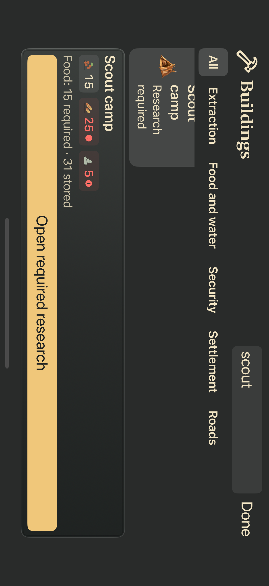
phone · Stone Age HUD iPhone
SHA256 a605e66df0449241bfbb94b9603b1000d8eb2c1fb726589b849356b355321060
ipad · Stone Age HUD iPad
SHA256 ffd1507cbca40a65ee0bf0b799eb1534a2cfba14837457a4ea95da19128c0533
riverbend-ordinary-continue
NormalEntryUITests/testRiverbendOrdinaryOpeningAndContinue()
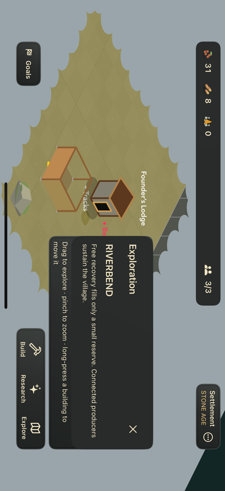
phone · Stone Age HUD iPhone
SHA256 e726c0286b794b87aba846007cc131156720f3beaa540fcc7169e944f72b3446
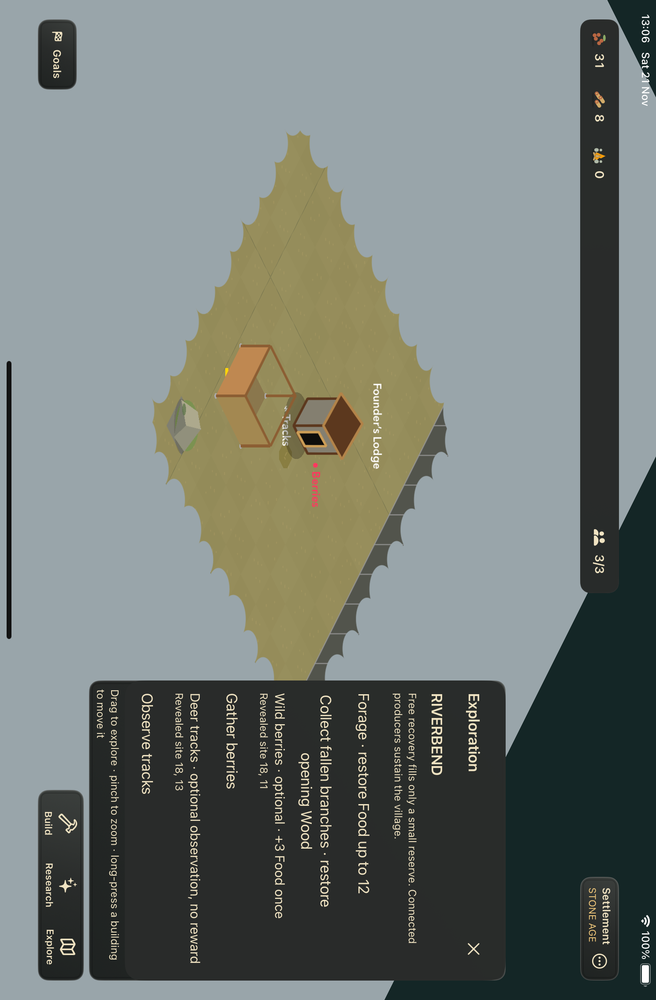
ipad · Stone Age HUD iPad
SHA256 22374291f35ed9ebec04a822068c40c818760d4b97bbfc2b763b756bffb6ebd8
riverbend-ordinary-opening
NormalEntryUITests/testRiverbendOrdinaryOpeningAndContinue()
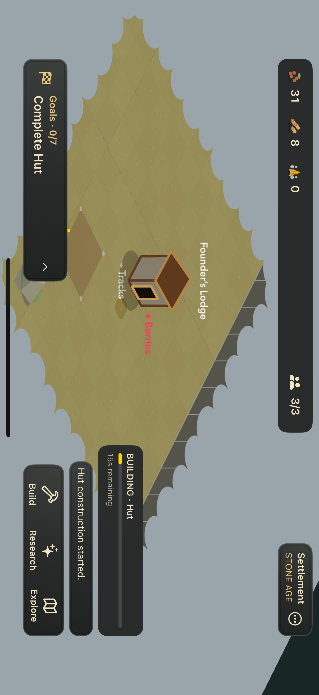
phone · Stone Age HUD iPhone
SHA256 5238e20ae63bbc1c16f078eddf8d7a3f02af7e2f32199fdcd6cb2191cf3dbed3
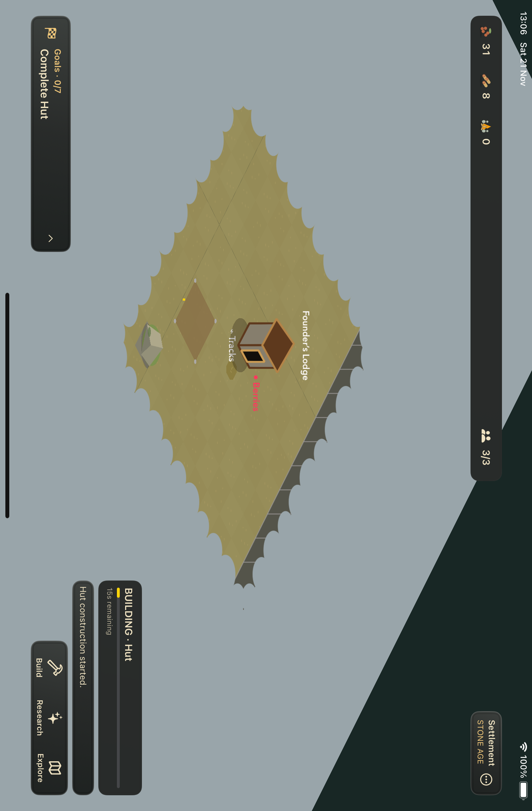
ipad · Stone Age HUD iPad
SHA256 57a0fdb378bfa56b655d7e5525b72ff440c14fad117a9d3db666a7998b3e7057
riverbend-whole-forest-real-survey
NormalEntryUITests/testRiverbendOrdinaryOpeningAndContinue()
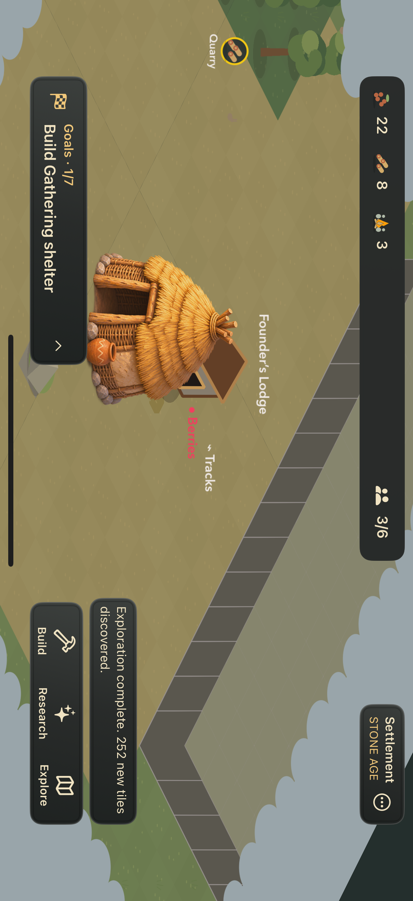
phone · Stone Age HUD iPhone
SHA256 2f8d16138b6b79fce9e2635dfae8ca34c780142ea877c083dfa2973a66b791b4
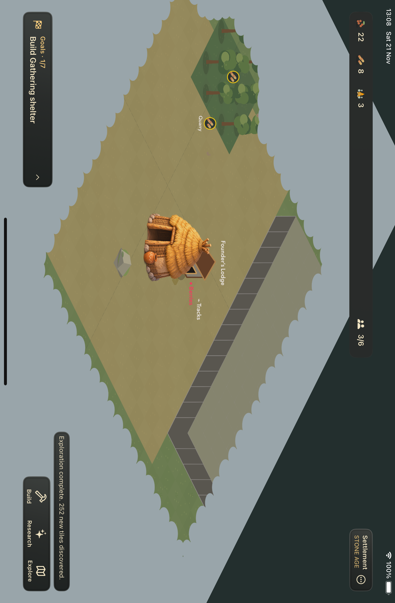
ipad · Stone Age HUD iPad
SHA256 2d259654f5369f75d2988f6077c192afcb3eb940f488bb86403b08bf3116db4d
stone-hud-04-exact-expedition-research
NormalEntryUITests/testStoneAgeExploreResearchAndReturn()
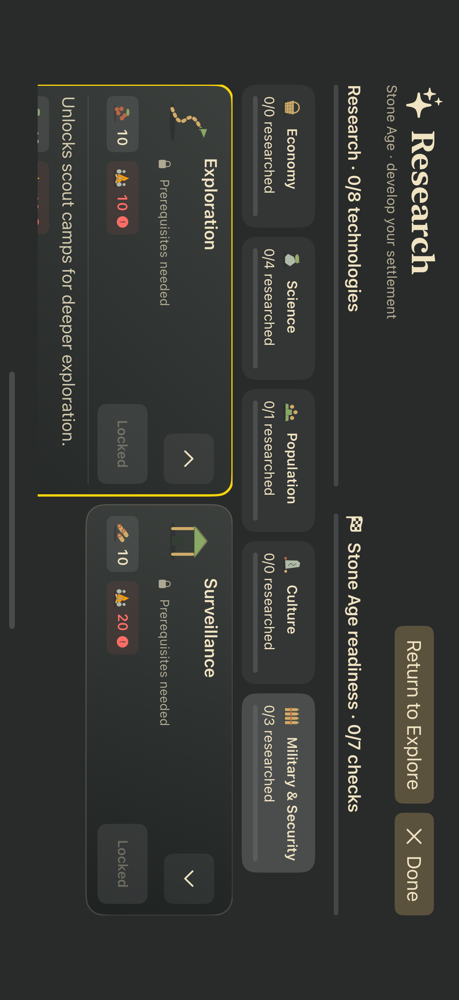
phone · Stone Age HUD iPhone
SHA256 c2f96866fca1e735348d41a3999c619282bce294f42caf54a979a2272335143f
ipad · Stone Age HUD iPad
SHA256 f76b602bd12e768b77ad56e2f85095bc247186e8ce768afc65b8d97b406c4132
stone-hud-05-explore-return
NormalEntryUITests/testStoneAgeExploreResearchAndReturn()
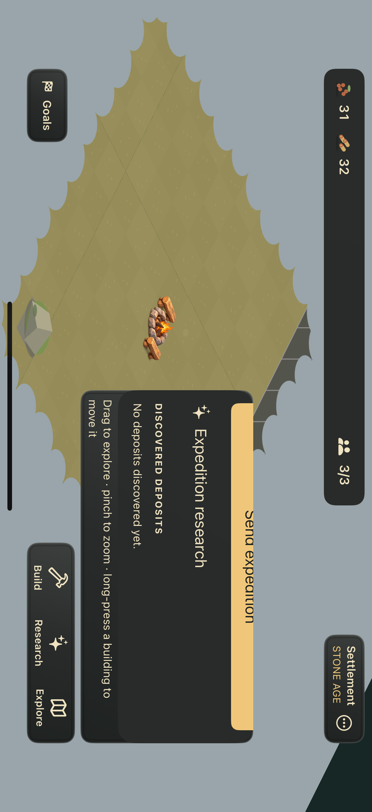
phone · Stone Age HUD iPhone
SHA256 52532da4c4351098455945c06508f54afe94b8bc71abbf5dc951288f1b895900
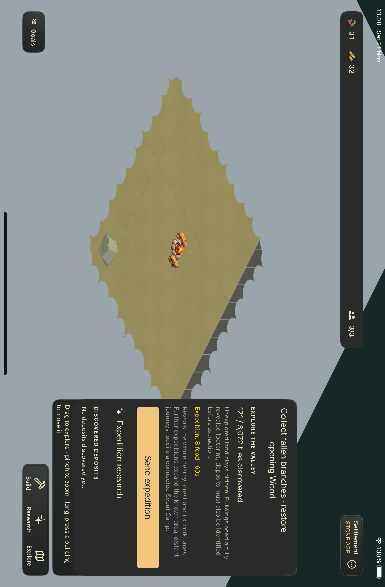
ipad · Stone Age HUD iPad
SHA256 a78bf6da183996983a4792827d257ef52e6b5a9a5d7fc330421d60a55d11909b
stone-hud-01-ordinary-new-game
NormalEntryUITests/testStoneAgeHUDHierarchyAndOrdinaryRoutes()
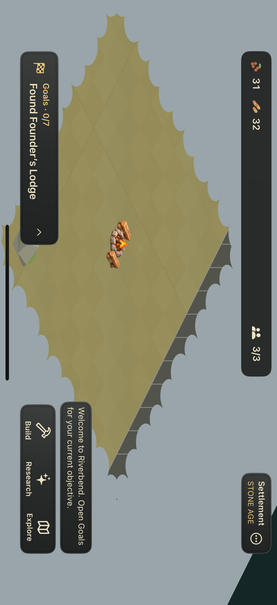
phone · Stone Age HUD iPhone
SHA256 88029c5f8ad1fa65d9d3ca3491eacda0952fe6478bf977277f16a30dafc21de4
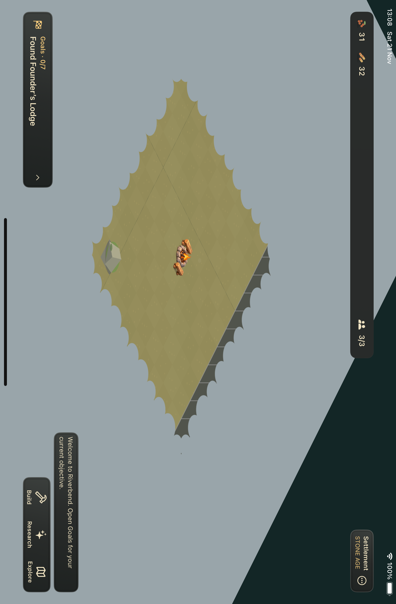
ipad · Stone Age HUD iPad
SHA256 000278b8e64a1985606fd1d7fd52c50fa94213cd42ac584990ac0aa32e0366ca
stone-hud-02-placement
NormalEntryUITests/testStoneAgeHUDHierarchyAndOrdinaryRoutes()
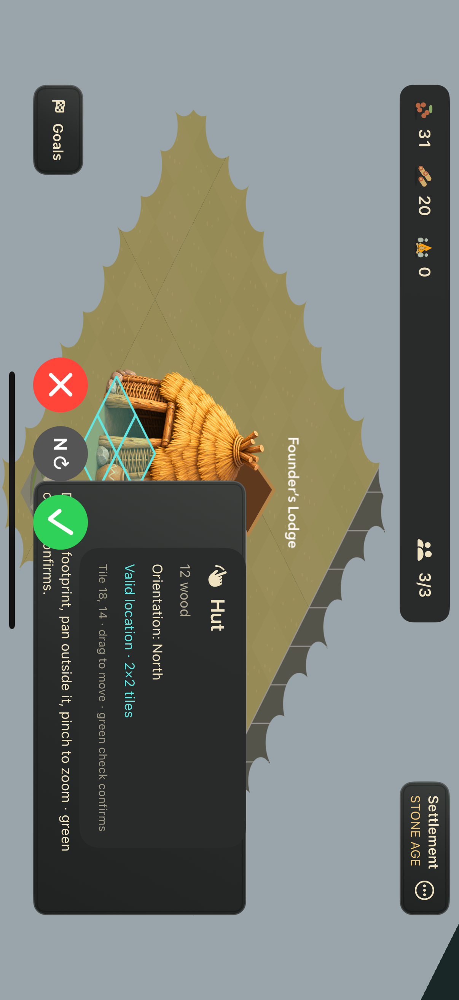
phone · Stone Age HUD iPhone
SHA256 6d7729d557047cbad158dd9a8ac4aee6d7b50c264e98c41c7f4d5aef840aeebe
ipad · Stone Age HUD iPad
SHA256 a700dca931acf68261ea14b13cec9a2170a4492a976107607e3f56c75f66745e
stone-hud-03-ordinary-continue
NormalEntryUITests/testStoneAgeHUDHierarchyAndOrdinaryRoutes()
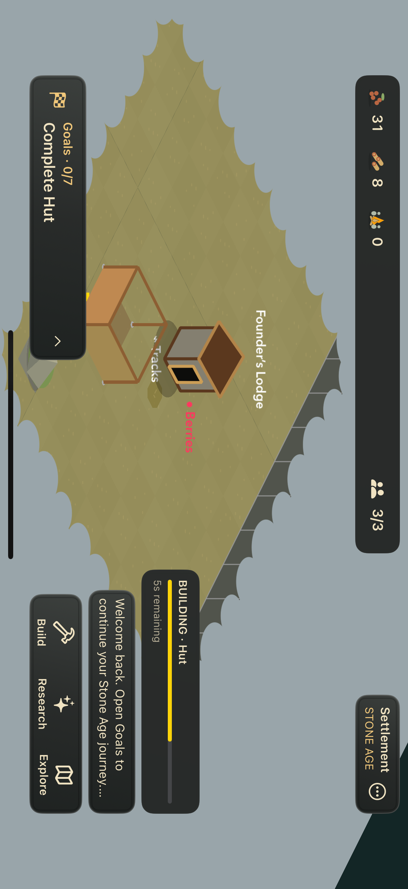
phone · Stone Age HUD iPhone
SHA256 edd4fa4bc3133254255aa13a60bc4c5b58d6bec61451bdb67ccc00fbe73b603e
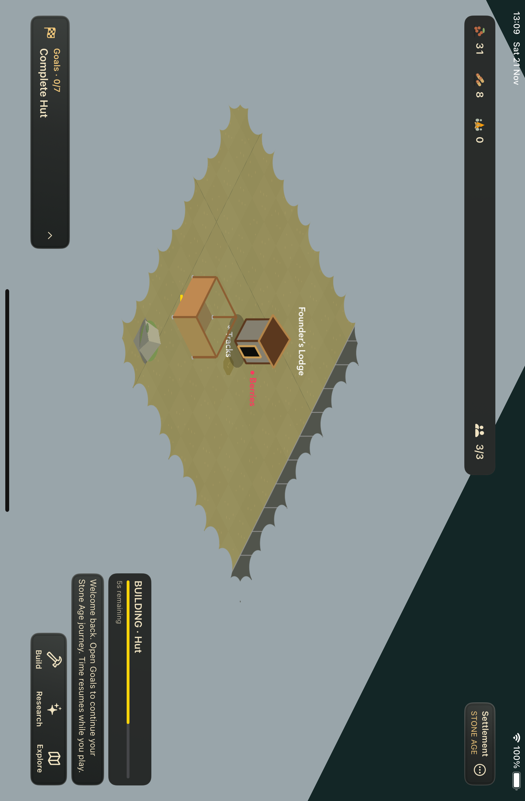
ipad · Stone Age HUD iPad
SHA256 637b8a8b3fc315ffb0f417ef197b73b537cbf15f673bd0c447e90e58319224be
stone-hud-06-relocation
NormalEntryUITests/testStoneAgeHUDHierarchyAndOrdinaryRoutes()
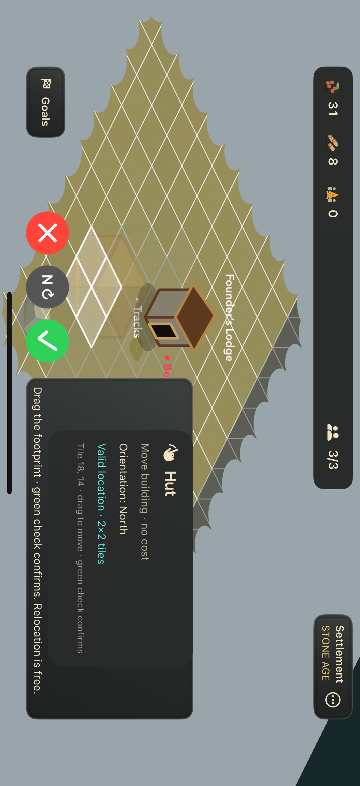
phone · Stone Age HUD iPhone
SHA256 01631d7570e4f86991e2663fe30fce0eefd94c2a607a865da5aff6adab8d7319
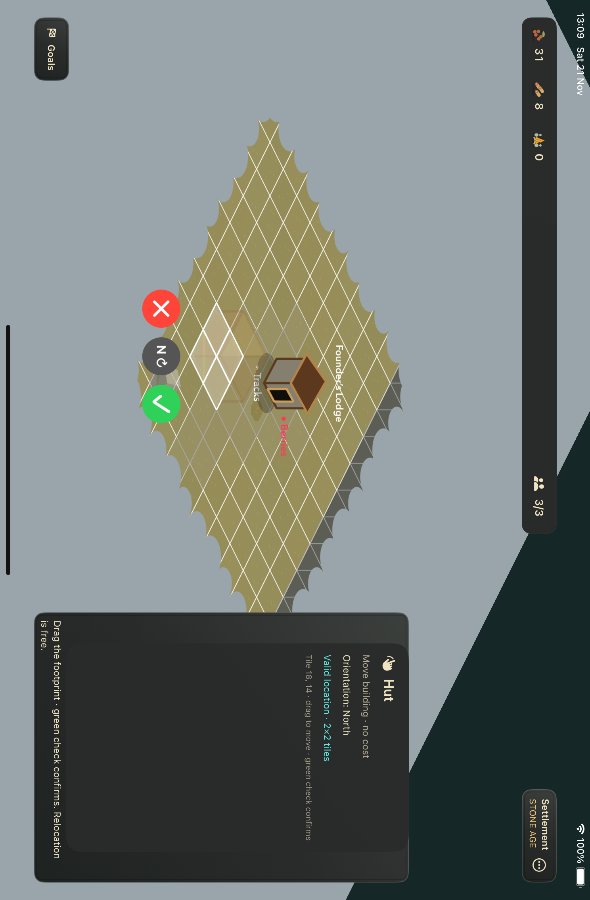
ipad · Stone Age HUD iPad
SHA256 89e5e4c5a553ea65da7c32268c1b55b41b1f9a39d63144bd515e1c1f674a0c43
stone-hud-01-ordinary-new-game
NormalEntryUITests/testStoneAgeHUDLargerTextAndOrdinaryRoutes()
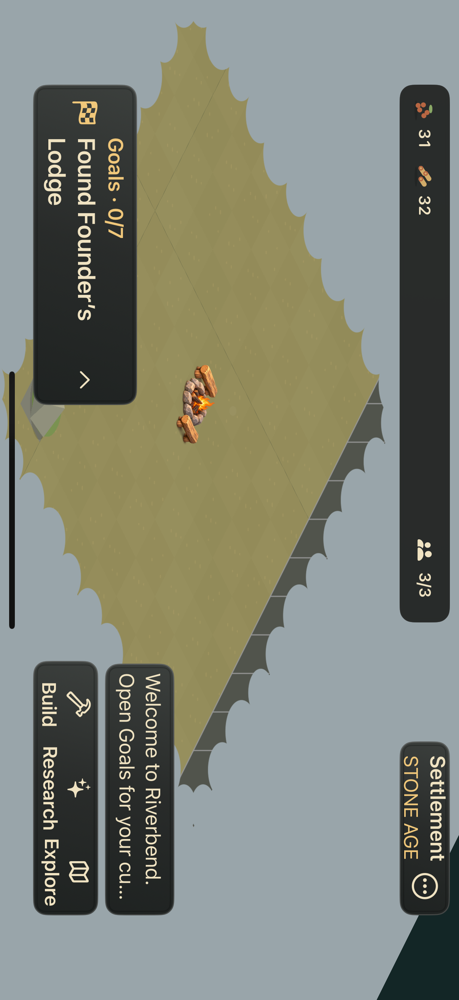
phone · Stone Age HUD iPhone
SHA256 1fa842963a41e9baa6a8b13a8caded0bd780b7113e2aa2b20c4bf3e7192bc317
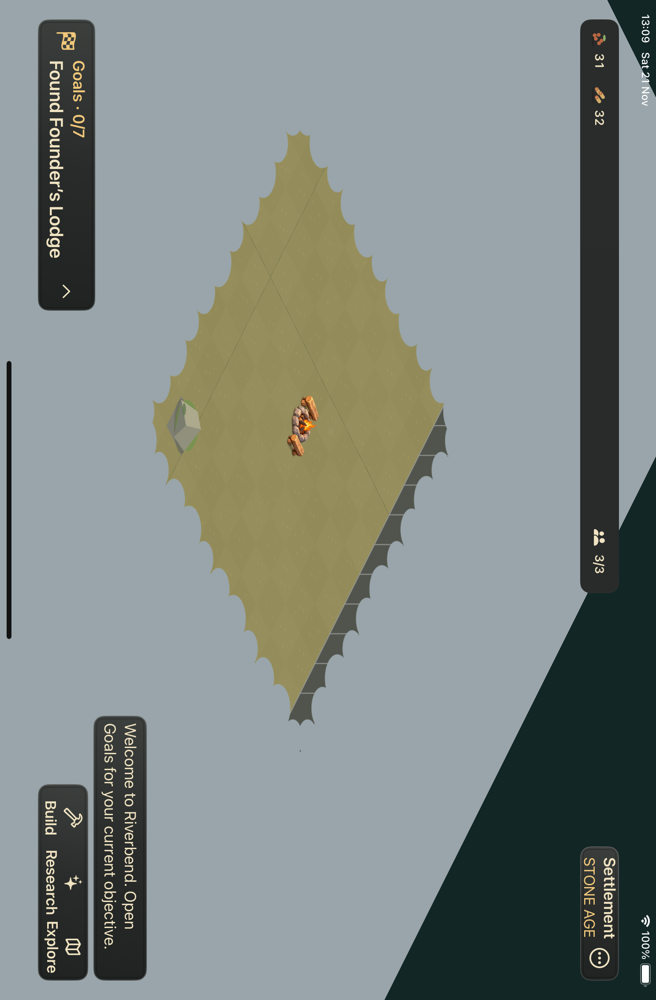
ipad · Stone Age HUD iPad
SHA256 7390b56da1bc4c4703b3bf8700aad38a7dfe3876c5be042ab17680e6a09160d4
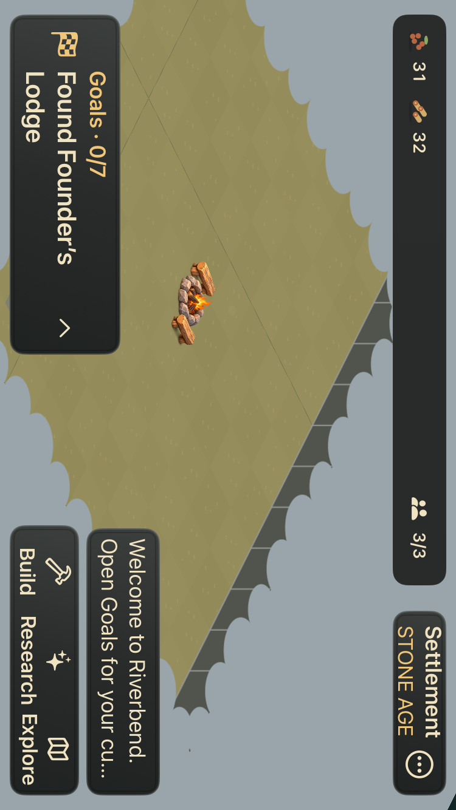
compact-debug · Riverbend UI2 Menus SE
SHA256 3478efdfe1122275b3f13ce98d956f99939dac404327e7c50c4c7746acedb0ef
stone-hud-02-placement
NormalEntryUITests/testStoneAgeHUDLargerTextAndOrdinaryRoutes()
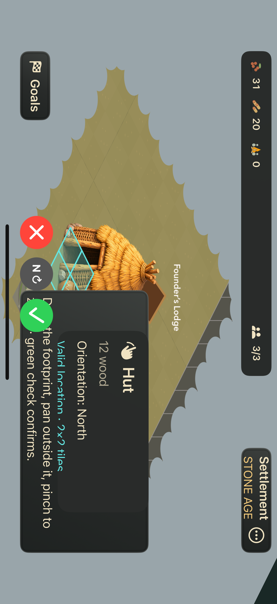
phone · Stone Age HUD iPhone
SHA256 f85039db8ca0637f3c93e3ef527b432915478bda20afcb7687871e2b9f99f4de
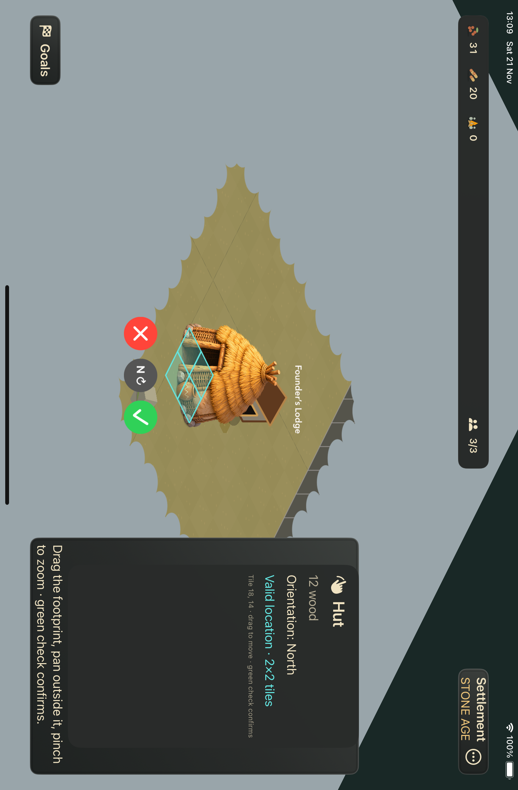
ipad · Stone Age HUD iPad
SHA256 004fa940e14780c9ba1f57feff052a3e958edb8232e31f35b3ac5138bfa653a2
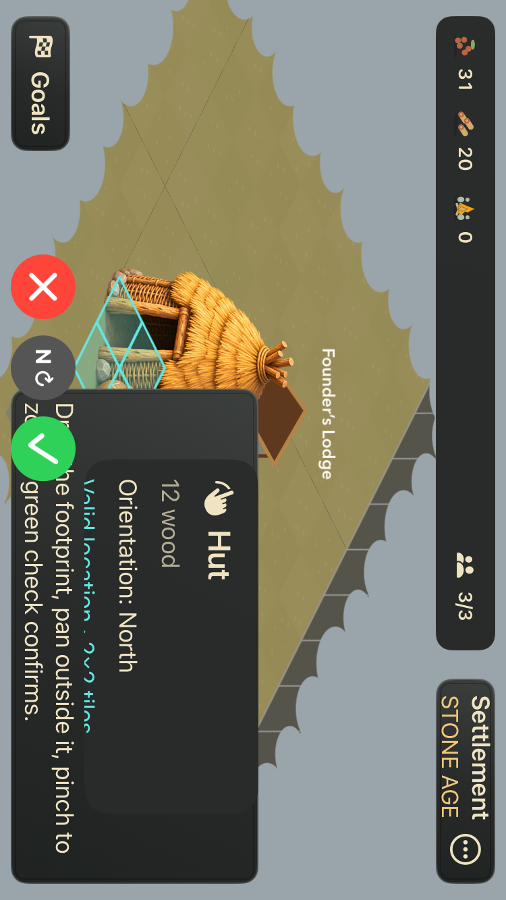
compact-debug · Riverbend UI2 Menus SE
SHA256 c34fe3e3258fafc21a1cf50a4286f9492489a54e131ab35338393b8afed8b558
stone-hud-03-ordinary-continue
NormalEntryUITests/testStoneAgeHUDLargerTextAndOrdinaryRoutes()
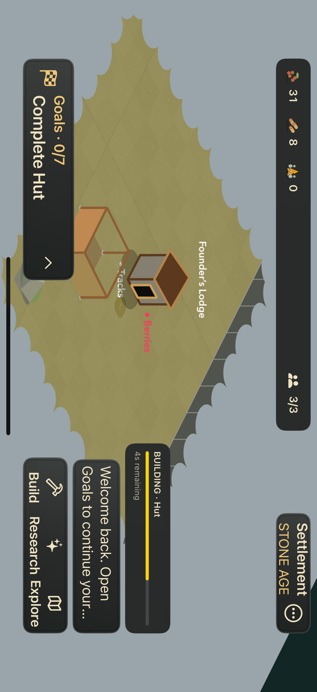
phone · Stone Age HUD iPhone
SHA256 a40c538091285be7e5626e3e7bf2afa59f388dea2c3914692ab8bf82f7290f34
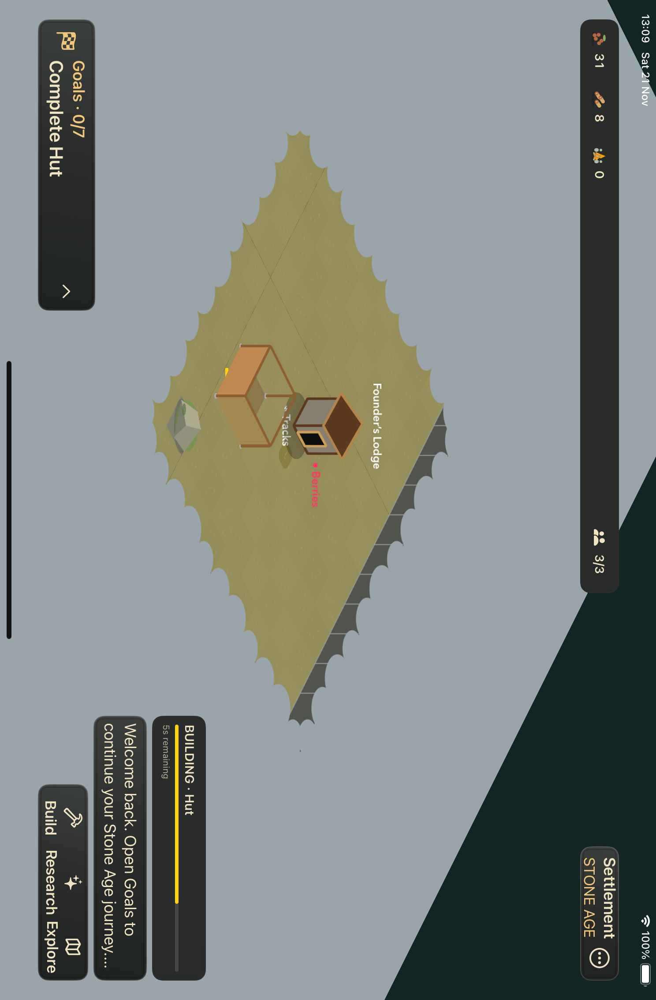
ipad · Stone Age HUD iPad
SHA256 83366c3a57f03bca48aa9ac599228f3470d529c14e1f4e51cb358eb16d88439b
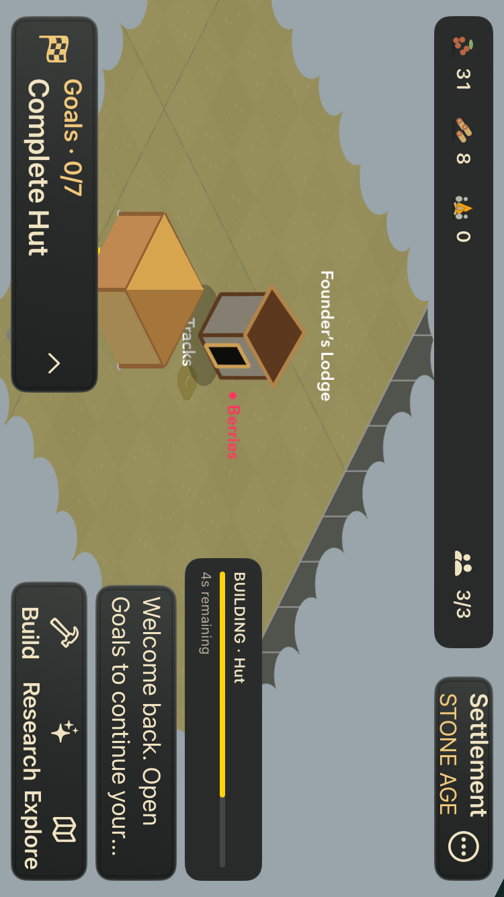
compact-debug · Riverbend UI2 Menus SE
SHA256 054c3f1868034c2ac8a0af1076ca274462c66179ded5bd71e5222b68827a6c94
stone-hud-06-relocation
NormalEntryUITests/testStoneAgeHUDLargerTextAndOrdinaryRoutes()
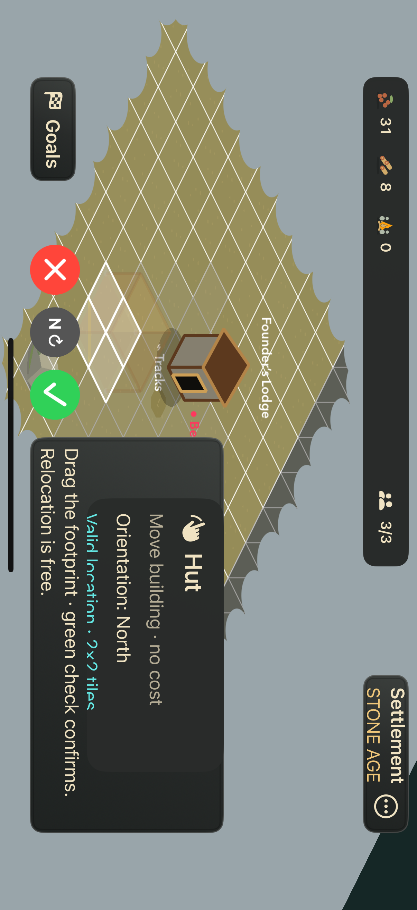
phone · Stone Age HUD iPhone
SHA256 eb14c166a8b1c5c9543047839fd4dbd096953676e24b35c621f3cc7016a9c6fe
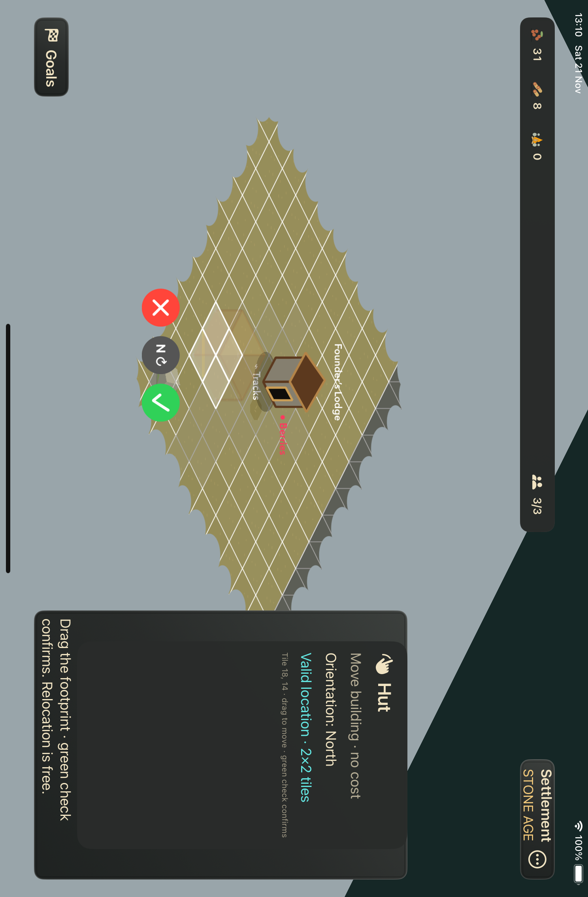
ipad · Stone Age HUD iPad
SHA256 bd6cc86d22ed43889fbe8a504173b4768137c3c611c8c50c78e6ebe108e6a1dc
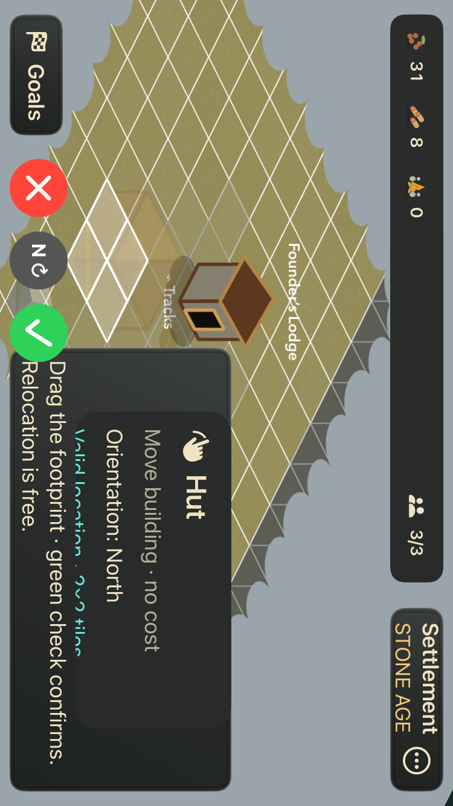
compact-debug · Riverbend UI2 Menus SE
SHA256 ca6b1dc710cd55bb50a0e7b2a17f459c3b016175fbd6e4a477842300de2e3776
stone-hud-home-screen-icon
NormalEntryUITests/testStoneAgeHomeScreenIcon()
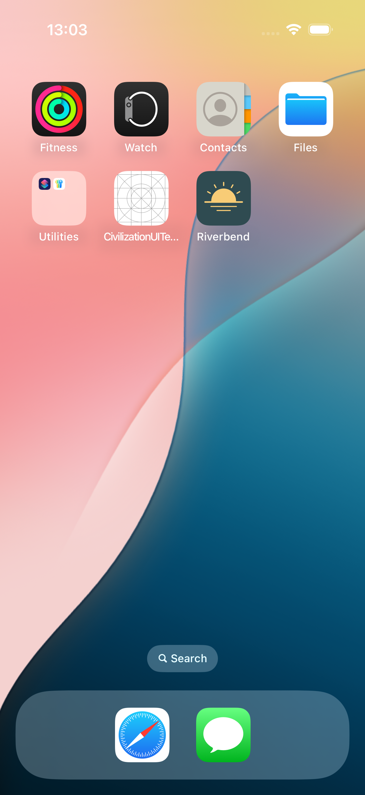
phone · Stone Age HUD iPhone
SHA256 acc4494c45b57f4f4d5ad33baa9a9c970d098847c968e8e72092a4f39d3f34f6
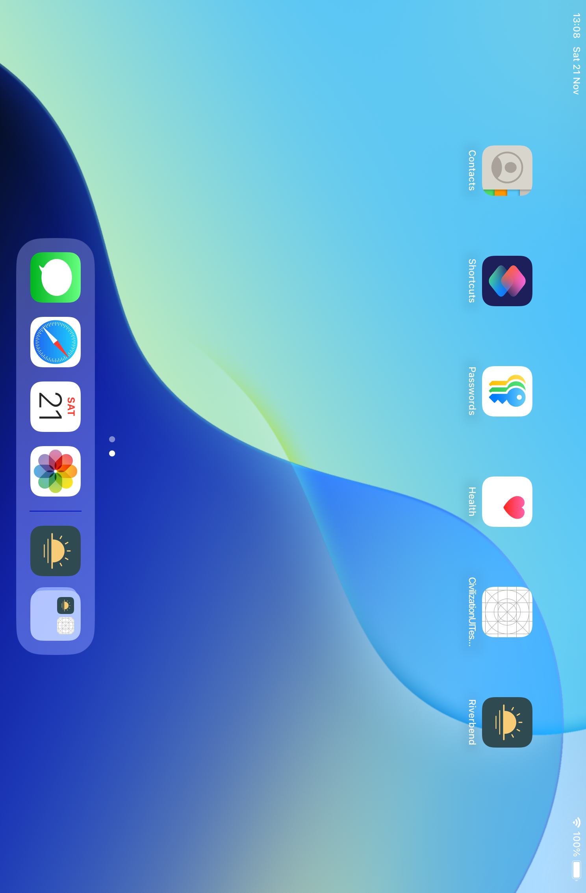
ipad · Stone Age HUD iPad
SHA256 da98be2242a0ba6c29f65a14ee6d465f19b135525c88b779e67038157f0529ae